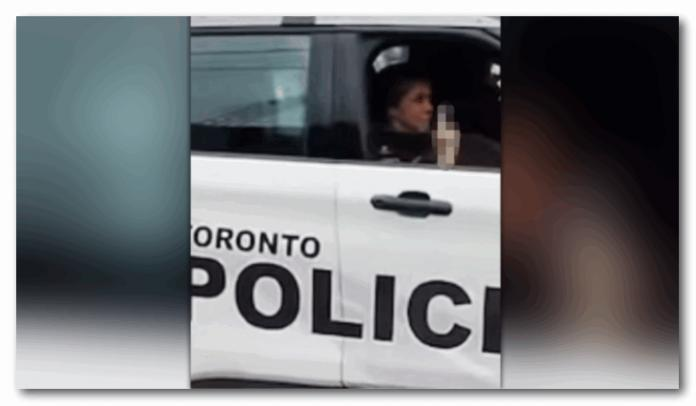

多伦多警察局(TPS)正在调查一名警察的行为，此前她被拍到在一场关于非法停车的争吵中向一名市民竖起中指。
在社交媒体上发布的一段视频中，可以听到一名男子与两名警察对峙，他指责他们在星巴克的装卸区（loading zone）非法停车取饮料。据悉，该视频是在Front和King街之间的 Berkeley街拍到的。
Cops park illegally for their Starbucks run then give the finger to the person calling them out.
byu/RaspberryBlizzard intoronto
“当其他人因为把车停在了不能停车地方被开罚单时，你却被允许把车停在装卸区？”这名男子问道。
“那么，如果我把车停在那里，罚单要多少钱?”
视频中的女警官试图为停车行为辩解，她说:“我理解你的想法，但是我们一天下来要工作11个小时，我们需要咖啡因。”
“别跟我说教，”这位恼火的市民迅速回击。
“你们不应该这么做。这看起来真的很糟糕…你们这些家伙…必须多尊重一下公众。”
男警官试图再次辩解，但很快就被制止了。
“(你)宁愿我把车停在车流量很大的Front街吗”
“我宁愿你把车停在一个普通的停车位，就像其他人一样，”男人还没说完就插嘴说。
当警官们端着饮料回到警车时，女警官又回了句：“我们正在做我们的工作，兄弟（bro）。”
“我不是你的兄弟，”愤怒的市民咆哮道。
就在此时，女警官面朝前方冲着拍摄者这边伸出了中指，并关上了车窗。
目前还不清楚视频是何时拍摄的，citynews联系了多伦多警察局询问此事。
一名警方发言人表示:“虽然我们无法透露视频中拍摄到的事件具体细节，但我们承认这名警官的反应是不恰当的。专业标准部门正在调查。”
网友评论：
“好消息，护士们，你们轮班工作12小时，所以你们现在可以把车停在任何地方，并且可以不尊重任何人!”有网友讽刺道。
“多伦多警察就是个笑话，但称呼市民为“兄弟”（bro）并对他竖中指是完全不可接受的。 ”
有网友扒出了视频的具体拍摄位置：“这是位于 Front 和 Berkeley 的星巴克，你可以在视频结尾附近看到 Berkeley St 的标志。这条街对面就有一个停车场，拐角处还有一个。Nicholson Lane(一条巷道)就在南面 220 米处。小巷深处还有一个消防站。停车选择太多了…”
“如果麦当劳或沃尔玛的最低工资员工对顾客做同样的动作，他们会立即被解雇。显然，我们的社会对拿最低工资的工人的期望和标准要高于拿高薪的持枪警察。”
你怎么看？
图片：citynews